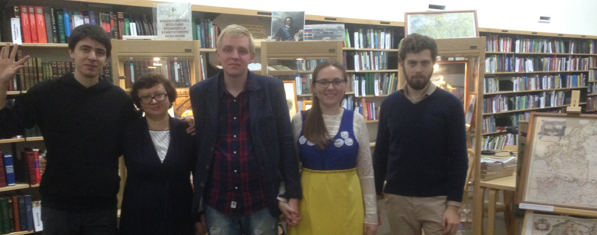

Немного об интерактивном музее
Добро пожаловать на сайт интерактивного 3D-музея. Мы всё ещё ведём работу над проектом, но уже постепенно готовы показывать некоторые экспонаты. Сайт сделан на базе выставки Музея Ингрии в Санкт-Петербурге. Поэтому вы сможете найти некоторое сходство с имеющимися экспонатами.
При создании музея, посвящённого истории нашего многонационального региона нельзя обойти тему культурного многообразие народов России.
С 2013 года было проведено с десяток выставок в Петербурге, Стрельне, Петергофе, Ломоносове, Выборге. Теперь предлагаем вам ознакомится с интерактивной 3D-версией музея Ингрии на нашем сайте.
Идея создания такого музея теплится в наших умах довольно давно и совсем недавно мы начали тесное сотрудничество с музеем Ингрии. Идея музея довольно проста - экспонат сам должен рассказывать о себе, а посетитель иметь возможность в любой момент прикоснуться к истории.
Мы постоянно в поиске новых возможностей. В работе используем как привычное 3D-моделирование, так и 3D-оцифровку экспонатов на основе фотографии.
В процессе работы над музеем мы используем технологию оцифровки экспонатов — посредством серии фотографий, сделанных по периметру объекта, создаётся 3D-модель, которая в дальнейшем и будет экспонатом виртуального музея. Перед тем, как модель будет загружена в ваш браузер, она проходит процесс упрощения полигонов и текстур, без дополнительной обработки она бы очень много весила.
3D-моделирование позволяет нам продемонстрировать как существующий предмет, так и воссоздать давно утраченные архитектурные сооружения и различные виды транспорта. Думаю вы бы не отказались прогуляться по крепости Ниеншанц или же прокатиться на драккаре времён викингов ;)

Добровольнцы, принимающие участие
Ничего бы этого не было, если бы не поддержка и активная помощь людей. Людей, которые находили время чтобы принять активное участие в проекте. Кто делом, а кто профессиональным советом. Не могу не отметить их вклад. Большое спасибо вам!
Луговкин Владимир
Программист
Михайлов Фёдор
3D-дизайнер
Гордюшин Александр
Программист
Игорь Иванов
Руководитель Музея Ингрии в Санкт-Петербурге
Александра Сергеева
Фотограф
Уваров Михаил
Краевед
Витушкин Дмитрий
Краевед
Анастасия Юхансон
Менеджер, держит всех в тонусе
Ирина Иванова
Волонтёр
Интерактивный музей Ингрии — это наверное нечто большее, чем просто сайт с 3D-графикой. По крайней мере для меня. Задумка такого музея родилась года два назад точно, но тогда у меня не было достаточных знаний в области web-разработок, чтобы воплотить задуманное.
Садясь за работу над сайтом, условился, что вместе с этим проектом буду расти профессионально, каждый раз находя новые сервисы, технологии, позволяющие реализовать задуманное. С того момента сайт не раз переписывался с нуля, каждый раз выглядя совершенно иначе.
Много раз работу откладывал в долгий ящик, но потом снова и снова возвращался к набросками, планам, разработкой этапов. Что-то удаётся воплотить сейчас, на что-то ещё нужно время. Но меня радует, что когда-то труднодоступное сейчас является отработанным рабочим процессом. Это придаёт оптимизма планам на будущее.
— Михайлов Фёдор